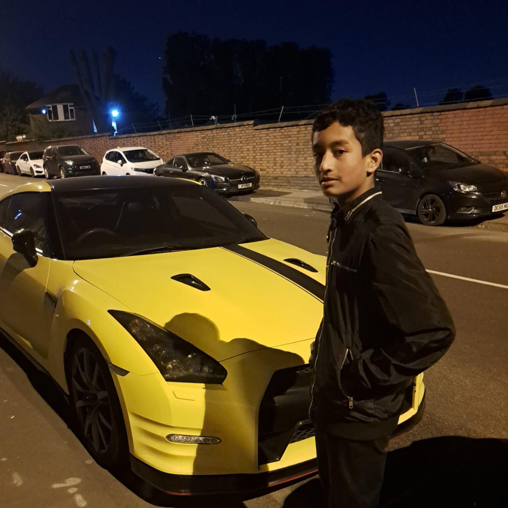

Quran Maar — Read the Qur'an Online with Audio Recitation, Prayer Times, Hadith and the Hijri Calendar
Quran Maar App
Install it on your phone or computer for quick, full-screen access to the Qur'an, prayer times, and Qibla.
The Android app is provided directly as an APK rather than through Google Play, so your phone may show a one-time "install from unknown source" prompt — that's normal for a direct download. On iPhone/iPad and on desktop, installing works differently: no APK is needed, since the site itself can be added as a full, app-like icon.
Prayer Times
The Moon
The World Right Now
The Qur'an
Hadith Collections
Qibla Finder
Your location and the Kaaba, connected by the actual great-circle path — the direction to face is calculated separately from your coordinates.
The Qibla bearing is calculated fresh from your coordinates and the Kaaba's fixed location (21.4224779° N, 39.8251832° E) every time your location changes — it is never a fixed or assumed direction.

Md Adil Ahmed Rajon
I am Md Adil Ahmed Rajon. I created this modern Islamic learning platform to help you read the Qur'an in Arabic and many other languages, check accurate prayer times with live countdowns, and follow a Hijri calendar. I designed it for simplicity and clarity, so you can explore the Qur'an and Islamic practices in an interactive and respectful way.
To collaborate or work with me, you can call me at +44 07440445929 or email me at 20rajona@gmail.com.
© 2026 Md Adil Ahmed Rajon

Adil Hasan
Hi! I'm Adil Hasan. I helped build this website by taking the pictures and media that were needed to make it complete. I'm glad I could contribute and help bring this project to life.